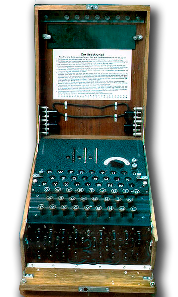

История

Шифрование или криптография берёт своё начало с 3-го тысячилетия до нашей эры. Тогда схема шифрования была проста - замена буквы алфавита другой буквой или же символом.
Но время идёт вперед, технологии развиваются и криптография не исключение. В 15 веке в Европе и уже в 19 веке на Ближнем Востоке начали использовать более сложный и самый лучший в общении - Полиалфавитный шифр. А суть этого шифра заключается в цикличном применении нескольких простых (моноалфавитных) шрифтов.

Разберём на примере шифра Виженера:
- Есть определённое сообщение, которое мы хотим зашифровать, и есть ключевое слово для дешифровки.
- Смотрим в шифр Виженера и смотрим на ключевое слово.
- Запоминаем строку, где находится первая буква ключевого слова.
- Смотрим на шифр Виженера и находим первую букву шифруемого слова в таблице.
- Проводим зрительную линию от первой буквы шифруемого слова и от первой буквы ключевого слова.
- Буква где пересекаются первая буква ключевого слова и шифруемого слова и будет первой буквой зашифрованного сообщения.
- Повторяем процедуру, пока не зашифруем сообщение полностью.
На языке математическом языке такой алгоритм можно записать так:
- Есть шифруемое сообщение (x1, x2, x3, ... xn), где x - буквы сообщения, и есть n количество простых (моноалфавитных) шифров (если проще, то ключевое слово где n - его буквы).
- Тогда к x1 будет применяться шифр n1, к x2 - n2 ... к xn - nn.
- Когда взятое количество n моноалфавитных шифров закончилось - повторяем процедуру по кругу, и так пока не зашифруем сообщение полностью.

В последствие в деле шифрования начали использовать электромеханические приборы для упрощения процесса, и происходило это от начала и до середины 20 века.
Начиная с середины 20 века и до 70-х годов, начали использовать математическую криптографию. Обязательным этапом создания шифра стало изучение его уязвимостей, но в большей мере всё оставалось по-прежнему - использовали старую добрую классическую криптографию.
И наконец, с 1970 и по наше время идёт современная криптография. Именно в это время появилась криптография с открытым ключом. Кстати, использование криптографии частными лицами в разных странах очень сильно различается - где-то разрешена и используется, а где-то категорически запрещена.
Криптография давно стала неотъемлемой частью нашей с вами жизни и используется повсеместно: шифрование писем, документов, телекомунникаций, сообщений и т.д. Также с помощью криптографии пытаются достичь полной секретности в военных переговорах и в шпионаже.